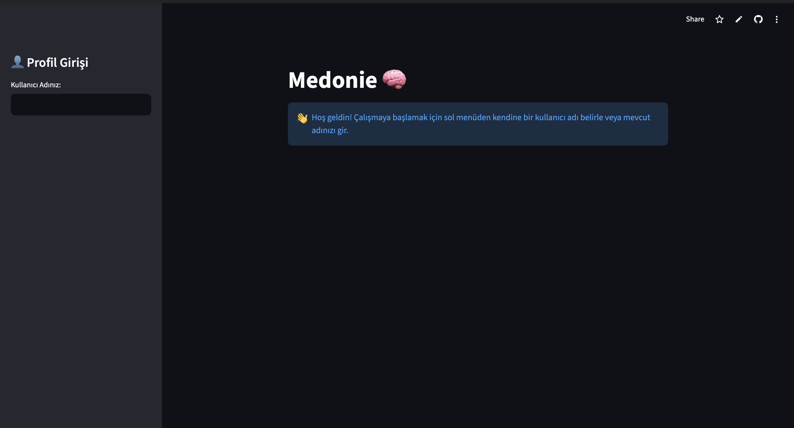

MedBrain AI: Escaping the Localhost Illusion
The Problem
I built an AI-powered flashcard application that extracts raw data from PDFs using Gemini 3.0 Flash-Preview and schedules them using a spaced repetition algorithm. Locally, it was flawless. I deployed it to Streamlit Community Cloud, users logged in, uploaded notes, and started studying. The next day, the server rebooted, and every single flashcard was permanently gone.
What I Did (and What I Decided)
I had fallen into the classic trap of ephemeral containers. I was using a local SQLite database (`db.sqlite3`) which gets wiped every time a cloud container spins down. "Works on my machine" didn't translate to the cloud.
Instead of patching it with hacky CSV exports, I rebuilt the data architecture. I migrated the entire system to a cloud-native PostgreSQL instance via Supabase. While doing this, I realized the app was fundamentally single-tenant: if two people used it, they were writing to the same database tables and ruining each other's spaced repetition intervals.
I redesigned the schema to include a multi-tenant structure, isolating user sessions state and ensuring database queries were strictly bound to unique user identifiers.

The MedBrain interface after migrating to Supabase, successfully isolating a specific user's spaced repetition session.
What Came Of It
The app no longer loses data, and multiple people can use it simultaneously without corrupting the state. More importantly, I learned the hard boundary between writing a script and architecting a reliable system. A multimodal AI that reads PDFs is an impressive feature, but it's useless if the underlying database architecture can't survive a server reboot.
View Repository ↗